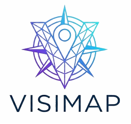

Visimap Documentation - v0.0.0

Visimap
Plataforma Integral de Gestión de Visitantes y Personal
Solución de software diseñada para optimizar la gestión de accesos,
flujos de visitantes y organización del personal en el Museo MUVI.
📑 Índice de Contenidos
🎯 Descripción General
Visimap consolida un sistema escalable y eficiente para ofrecer una experiencia de usuario optimizada en entornos de alta concurrencia. Su propósito principal es facilitar el control de acceso fluido y mejorar la toma de decisiones basada en datos geográficos y organizativos.
🎥 Demostración en Vídeo
Recorrido completo por las funcionalidades clave de Visimap: dashboard de gestión, mapa interactivo de visitantes, planificación de eventos en el calendario, administración del personal y el asistente de Inteligencia Artificial.
Si tu navegador no reproduce el vídeo incrustado, puedes verlo o descargarlo directamente desde aquí.
✨ Características Implementadas
El sistema incluye las siguientes funcionalidades clave para la operativa diaria del museo:
- 📊 Dashboard Analítico: Visualización en tiempo real de métricas y distribución geográfica de visitantes mediante mapas interactivos.
- 👥 Gestión de Personal: Sistema robusto de administración para perfiles de usuario, con asignación de roles corporativos y control de estados (activo/inactivo).
- 📅 Calendario de Eventos: Planificación, visualización y seguimiento integral de la agenda corporativa.
- ✉️ Sistema de Invitaciones: Flujo seguro por correo electrónico para que los empleados configuren sus credenciales en su primer acceso.
- 🔐 Autenticación Completa: Inicio de sesión seguro, gestión de la sesión y flujos de recuperación de contraseñas.
- 📱 Diseño Responsive: Interfaz mobile-first implementada para garantizar su visualización óptima en pantallas de cualquier formato.
🛠️ Tecnologías Principales
La plataforma se fundamenta en un modelo de arquitectura moderna separando claramente la lógica de presentación de los servicios de backend.
| Capa | Tecnología | Propósito |
|---|---|---|
| Frontend | React, Vite | Construcción de interfaces dinámicas y alto rendimiento de compilación. |
| Estilos | TailwindCSS | Sistema de diseño ágil mediante utilidades CSS corporativas y adaptativas. |
| Backend / BaaS | Supabase | Proveedor de base de datos (PostgreSQL) y autenticación segura. |
| Gráficos | Recharts | Visualización interactiva de datos y analíticas de los visitantes. |
| Inteligencia Artificial | OpenAI / Gemini | Integración de IA para análisis de datos y generación de gráficos dinámicos. |
| Estado Global | Zustand | Gestión ágil y centralizada del estado global de la aplicación. |
| UI e Iconos | Lucide React | Biblioteca de iconografía vectorial estandarizada y minimalista. |
| Animaciones | Framer Motion | Transiciones modulares y fluidas para el enriquecimiento visual de la interfaz. |
📂 Estructura del Proyecto
Organización modular de los directorios siguiendo las mejores prácticas de desarrollo en React.
visimap/
├── .github/workflows/ # Automatización y CI/CD (Despliegue automático de TypeDoc)
├── docs/ # Documentación técnica y manuales corporativos
├── public/ # Assets estáticos y recursos públicos
├── src/
│ ├── assets/ # Recursos multimedia (imágenes, logos, SVGs)
│ ├── components/ # Componentes React (divididos en app/ y ui/)
│ ├── constantes/ # Constantes y valores globales del sistema
│ ├── database/ # Servicios de datos, repositorios y config de Supabase/OpenAI
│ ├── hooks/ # Hooks personalizados de React
│ ├── interfaces/ # Definiciones de tipos e interfaces TypeScript
│ ├── layouts/ # Plantillas de diseño y envoltorios de página
│ ├── pages/ # Componentes de página (vistas principales)
│ ├── rutas/ # Configuración y definición de rutas (React Router)
│ ├── stores/ # Gestión de estado global con Zustand
│ ├── styles/ # Configuración de estilos globales y Tailwind
│ ├── utils/ # Funciones de utilidad y lógica compartida
│ ├── App.tsx # Componente raíz y configuración de proveedores
│ └── main.tsx # Punto de entrada principal de la aplicación
├── .env # Variables de entorno (no incluir en control de versiones)
├── index.html # Plantilla HTML de entrada para Vite
├── package.json # Dependencias y scripts del proyecto
├── tailwind.config.js # Configuración de los tokens de diseño de Tailwind
├── tsconfig.json # Configuración base de TypeScript
├── vercel.json # Configuración para el despliegue en Vercel
└── vite.config.ts # Configuración del entorno de compilación de Vite
🚀 Instalación y Despliegue
Requisitos Previos
- Node.js (v18 o superior)
- Gestor de paquetes
npm
Pasos de Instalación
-
Clonar el repositorio:
git clone <URL_DEL_REPOSITORIO>
cd visimap -
Instalar dependencias:
npm install -
Configurar variables de entorno: Crear un archivo
.enven la raíz del proyecto y definir las referencias al backend y los servicios de IA:VITE_SUPABASE_URL=tu_url_de_supabase VITE_SUPABASE_ANON_KEY=tu_anon_key VITE_OPENAI_API_KEY=tu_api_key_de_openai -
Ejecutar el entorno de desarrollo:
npm run devLa aplicación estará disponible en
http://localhost:5173.
💻 Comandos Útiles
Tabla de referencias rápidas para la operativa sobre el código base:
| Acción | Comando | Descripción |
|---|---|---|
| Instalación | npm install |
Descarga e instala los módulos y dependencias de NPM. |
| Desarrollo | npm run dev |
Lanza el servidor de Vite en caliente (HMR). |
| Compilación | npm run build |
Genera la carpeta /dist optimizada para producción. |
| Previsualización | npm run preview |
Levanta un servidor sobre los estáticos de la última compilación. |
| Análisis | npm run lint |
Comprueba la calidad y el estándar de sintaxis del código. |
| Documentación | npm run docs |
Genera el portal técnico interactivo con TypeDoc. |
🗄️ Modelo de Datos
La persistencia y seguridad de la información está delegada en Supabase (PostgreSQL). Toda la información está protegida mediante Row Level Security (RLS) y manejada por políticas de control de acceso.
| Entidad | Descripción |
|---|---|
profiles |
Gestión centralizada de la identidad del personal (nombres, roles, estados y avatares). |
visitas |
Entidad transaccional para el registro de accesos y procedencia geográfica de los visitantes. |
eventos |
Planificación y registro descriptivo de la agenda corporativa y eventos del museo. |
notas |
Sistema de comunicación, avisos y anotaciones internas entre el personal. |
📅 Registro de Sesiones de Trabajo
Fase de Planificación y Diseño (2025)
Desarrollo conceptual, diseño de arquitectura y modelado de datos.
- 07/10/2025 · Creación de una imagen corporativa: Desarrollo de la identidad visual, conceptualización del logotipo y definición de la paleta de colores.
- 14/10/2025 · Contrato de prestación de servicios: Elaboración del documento legal para definir el alcance, términos y condiciones del proyecto informático.
- 21/10/2025 · Acta de reuniones: Redacción formal del documento para la validación técnica inicial y registro de acuerdos.
- 23/10/2025 · Puesta en marcha del proyecto: Definición de la planificación estratégica, cronograma y distribución de tareas del equipo.
- 28/10/2025 · Requisitos funcionales y no funcionales: Levantamiento de requerimientos y documentación exhaustiva de las especificaciones y limitantes técnicas del sistema.
- 04/11/2025 · Presentación del proyecto: Exposición de los objetivos principales e inicio del diseño de interfaces bajo la metodología de Atomic Design.
- 25/11/2025 · Diseño de Base de Datos: Creación del modelo Entidad-Relación y estructuración preliminar del esquema principal del sistema.
- 02/12/2025 · Presentación del Modelo de Datos: Demostración y defensa de la arquitectura de datos, exponiendo tablas, campos y relaciones establecidas.
- 09/12/2025 · Optimización del esquema relacional: Revisión final de la lógica de negocio, normalización y mejora de la robustez de la base de datos.
- 16/12/2025 · Cierre de Fase 1: Revisión global del planteamiento del proyecto y validación antes de dar paso a la implementación técnica del Frontend/Backend.
Fase de Desarrollo y Despliegue (2026)
Implementación de código, integración continua y validación de prototipos.
- 13/01/2026 · Presentación del primer prototipo funcional. Exhibición formal ante la tutoría del proyecto de la landing page, el formulario de acceso y la integración inicial del dashboard interactivo. Resolución de dudas de arquitectura.
- 20/01/2026 · Revisión de visualización de datos. Demostración de las mejoras aplicadas al mapa geoespacial, incluyendo asignación dinámica de colores y renderizado de leyendas.
- 27/01/2026 · Validación de módulos. Pruebas en entornos reales del dashboard de visitantes. Análisis de propuestas de escalabilidad (mensajería interna) y debate sobre el flujo de validación de cuentas por correo.
- 03/02/2026 · Presentación de la gestión de personal. Demostración completa del ciclo de vida de usuarios: alta, envío automático de invitaciones, edición desde el panel de administrador y revocación de accesos.
- 10/02/2026 · Desarrollo del flujo de invitaciones. Creación de las vistas específicas para la configuración de credenciales de nuevos empleados. Optimización general de la UX/UI de los formularios de la plataforma.
- 17/02/2026 · Refactorización de la Landing Page. Pulido del diseño corporativo, asegurando una presentación de alto impacto visual. Implementación de validaciones robustas de los esquemas de autenticación.
- 24/02/2026 · Elaboración de manuales. Documentación exhaustiva en el manual técnico y el manual de proyecto: arquitectura, infraestructura, configuración y justificación de stack tecnológico.
- 03/03/2026 · Redacción de documentación de usuario. Publicación de la guía de explotación operativa del sistema, orientada a formar a los operadores del museo en el uso del mapa, registros y agenda.
Tutorías
Sesiones de seguimiento técnico y validación de objetivos con el equipo docente.
- 27/03/2026 · Primera sesión de tutoría. Revisión integral del estado del proyecto y definición de la hoja de ruta técnica. Se acordó la migración completa a TypeScript para mejorar la robustez del código, la reestructuración del sistema de archivos y el desarrollo de una arquitectura basada en repositorios e interfaces para los servicios de Supabase. Evaluación positiva del progreso general y recomendaciones sobre la integración de componentes reutilizables.
- 16/04/2026 · Segunda sesión de tutoría. Presentación de los avances realizados, destacando la finalización de la migración a TypeScript y la implementación de las vistas de registro de visitantes y gestión de notas. Recepción de feedback sobre la optimización de la jerarquía de carpetas, la necesidad de implementar filtrado y paginación en las tablas de datos, y la importancia crítica de auditar las políticas RLS de la base de datos y el refinamiento del diseño responsive.
- 28/04/2026 · Tercera sesión de tutoría. Evaluación de los ajustes de diseño en el modo responsive y la correcta implementación de la gestión de cookies. Revisión de la nueva sección interactiva de Gráficos e Inteligencia Artificial, así como la validación del flujo para la creación de credenciales para los profesores del tribunal evaluador. Pequeña reunión con Paco para hablar sobre la documentación
- 06/05/2026 · Reunión grupal con Paco para hablar sobre el proyecto. Tema principal: manuales que debemos entregar y la entrega del proyecto final. Invitación al Github de los profesores del tribunal y dudas que hemos tenido sobre el tema de la documentación.
- 11/05/2026 · Cuarta sesión de tutoría. Presentación del asistente de Inteligencia Artificial avanzado y el sistema de filtrado dinámico en tablas. Implementación de mejoras visuales críticas, incluyendo la integración de vídeo en el Hero y el refinamiento estético global de la interfaz siguiendo las directrices de diseño corporativo.
- 11/05/2026 · Reunión con Paco. Revisión final del Manual Técnico y la estructura de la Presentación del Proyecto. Validación positiva de los entregables, destacando la calidad de la documentación y la coherencia del material de soporte para la defensa ante el tribunal.
- 25/05/2026 · Reunión conjunta de los dos grupos de DAW con Paco. Sesión grupal centrada en la preparación de la presentación final ante el tribunal. Revisión detallada de los ítems de evaluación que se tendrán en cuenta durante la defensa del proyecto y resolución de dudas sobre el formato de exposición, los tiempos asignados y los aspectos formales de la entrega.
- 26/05/2026 · Última sesión de tutoría. Presentación del proyecto finalizado ante el tutor, repaso detallado de cada funcionalidad implementada y recomendaciones de diseño orientadas a pulir los últimos detalles visuales. Ensayo técnico en el aula de exposición para verificar la correcta visualización del proyecto y de la presentación en el equipo y proyector que se utilizarán durante la defensa.
👨💻 Autoría y Licencia
Desarrollado por:
- Desarrollador Principal — Alberto Vera Mateos
Licencia:
Distribuido bajo la Licencia MIT. Se permite el uso comercial, modificación y distribución del software.